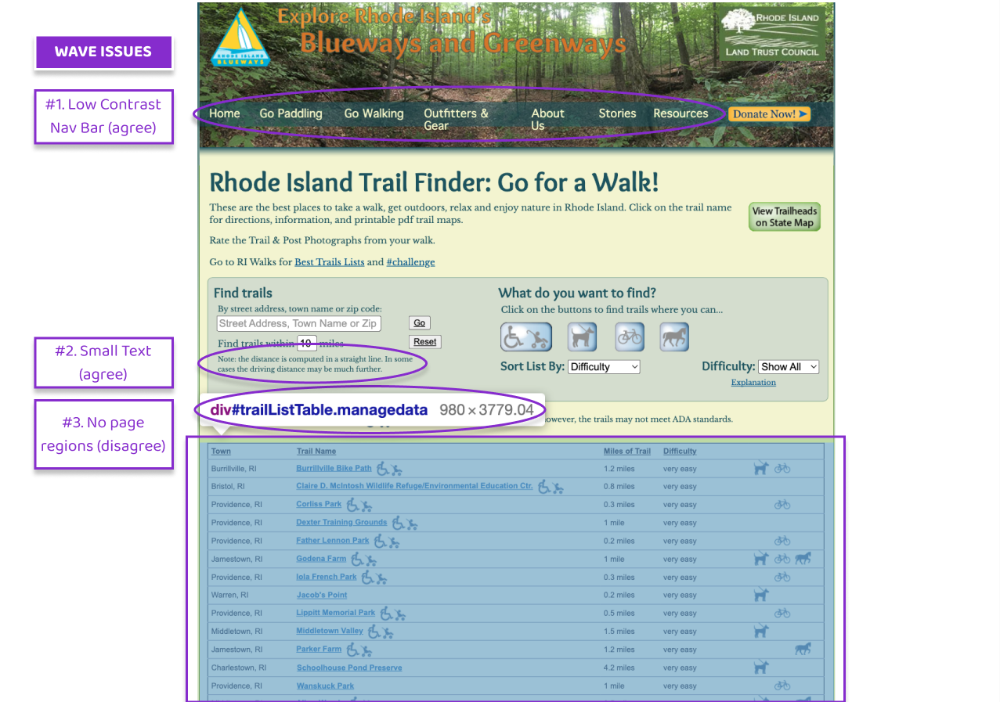

My goal for this project was to practice the workflow of redesigning a simple website. It involved analyzing and identifying flaws in an existing interface, creating low-fidelity and high-fidelity prototypes for various screen sizes, and building a responsive website based on those prototypes.
The website I picked to redesign is the Rhode Island Trail Finder. I found it by Googling “Rhode Island Trails,” and thought it would be a great website to redesign because a more attractive interface could encourage more people to explore Rhode Island’s various nature offerings.
A conceptual model is about how an interface reveals to the user how it works. Websites generally rely on visual cues to communicate their designer-envisioned models to users.
At the top of the interface's hierarchy is the large heading “Rhode Island Trail Finder: Go for a Walk!” effectively communicates that this is a tool for finding trails in Rhode Island (RI). Below this, there is a blue box with interactive input fields, buttons, and dropdown menus for finding and filtering trails. At the bottom, there is a table, presumably with a list of trails that fit the criteria defined in the section above.
My initial impressions were that the interface’s general flow makes sense, and that the visual formats of its input boxes, buttons, and sorting and filtering tools mostly follow conventions that efficiently indicate their functions. However, the placement of many elements feels cluttered and random, without a clear hierarchy, and there is a lot of inconsistency between the different types of search tools.
Usability is the capacity of a system to provide a condition for its users to easily perform the tasks while enjoying the experience. It encompasses dimensions such as:
In general, interfaces should be simply, easy to learn, provide appropriate and feedback, and have controls that people expect. Upon closer look at the RI Trail Finder interface, I found a number of usability issues that make it more difficult to navigate than necessary.
After identifying usability issues myself, I used WebAIM WAVE to detect possible accessibility problems. Here are 3 more significant problems it identified:
Based on the problems you identified in Part 1 and the page that you chose, create low-fidelity wireframes, a visual design style guide, and high-fidelity prototypes.
Overall Redesign Highlights:
Using my final high-fidelity prototypes, I recreated the Rhode Island Trail Finder website using HTML and CSS. Because this part of the assignment is focused on responsive design rather than development, I used dummy elements for navigational elements, buttons, dropdown menus, and other dynamic elements.